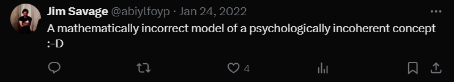

The wonderful Jim Savage calls the MaxDiff model of discrete choice a “mathematically incorrect model of a psychologically incoherent concept”1.
Despite this lovely dunk, and some lovely accompanying notes explaining why MaxDiff’s not great, the model remains frequently used in market research, most prominently as implemented in Sawtooth. Why is this?
Putting aside the most obvious answers like inertia and a dim view of statistical practice in marketing, it’s surprisingly hard to find a fully fleshed out explanation of the alternatives online. In this post, I do just that, with sections for:
- Introducing MaxDiff and its blemishes
- Showing how the issues propagate into final model quality
- Alternatives
Introducing MaxDiff
If you’re reading this post, you likely have some familiarity with the basics of discrete choice models, but here’s a brief refresher2.
We want to build a model of how real people respond to the request to make decisions among discrete options. This could be: - A pollster asking which candidate(s) or political parties each respondent favors - A marketing firm studying preferences amongst a variety of chocolate bars - A political scientist asking which message voters find most convincing
One reasonable model3 for this is to say that individual i making choices among j options can be inferred to have some underlying utility \mu from the available choices, and that while they usually choose their most preferred option according to their utility function, there is some degree of randomness. The basic model is then
\mu_{ij} = \mu_{ij} + \epsilon_{ij} , where the \mu_{ij} can have rich provenance (demographics and other individual traits, the context in which the decision is made, the other options available…) but is fixed, but there’s some \epsilon_{ij} of randomness involved. To make this model easier to estimate, we assume that \epsilon_{ij} has a Gumbel4 distribution. While we can (and will) push the basic logit model of this further to include respondent and choice level covariates, multilevel components, and other improvements, let’s think about the data we gather here for a moment.
To estimate
Psycologically Incoherent
Mathmatically Incorrect
The defects are not theoretical or cosmetic: an illustration
Alternative #1: rank-ordered logits with connected graphs of choices
Alternative #2: a backup plan- rank-ordered logits with ties
Stepping Back: the utility of discrete choice more broadly
Footnotes
The smiley face is a threat: it’s there to make sure MaxDiff stays down :-D↩︎
If you want more of an in-depth introduction, here are some resources I’d reccomend. First, Jim Savage’s blog post series is great, and does a fantastic job of explaining how our assumptions about choice making map onto the math. I also benefitted from reading Glasgow’s Interpreting Discrete Choice Models, which builds up the basics of choice models a bit more slowly. Finally, if you want something that goes much more in detail, Kenneth Train’s Discrete Choice Models with Simulation goes into great mathmatical detail about the models.↩︎
I won’t rehash more subtle implications of this basic model here; see the footnote above for references that explore the mind of this Homo Economicus more in depth. Instead, I’ll mostly pull up assumptions as they become relevant for discussing MaxDiff.↩︎
Other options are possible, but less common, and would take us too far afield, so I’ll skip explaining the choice of Gumbel versus other distriubtions here.↩︎
Reuse
Citation
@online{timm2024,
author = {Timm, Andy},
title = {Better Discrete Choice Modeling Through Rank Ordered Logits},
date = {2024-06-09},
url = {https://andytimm.github.io/posts/doing_maxdiff_better/better_maxdiff.html},
langid = {en}
}